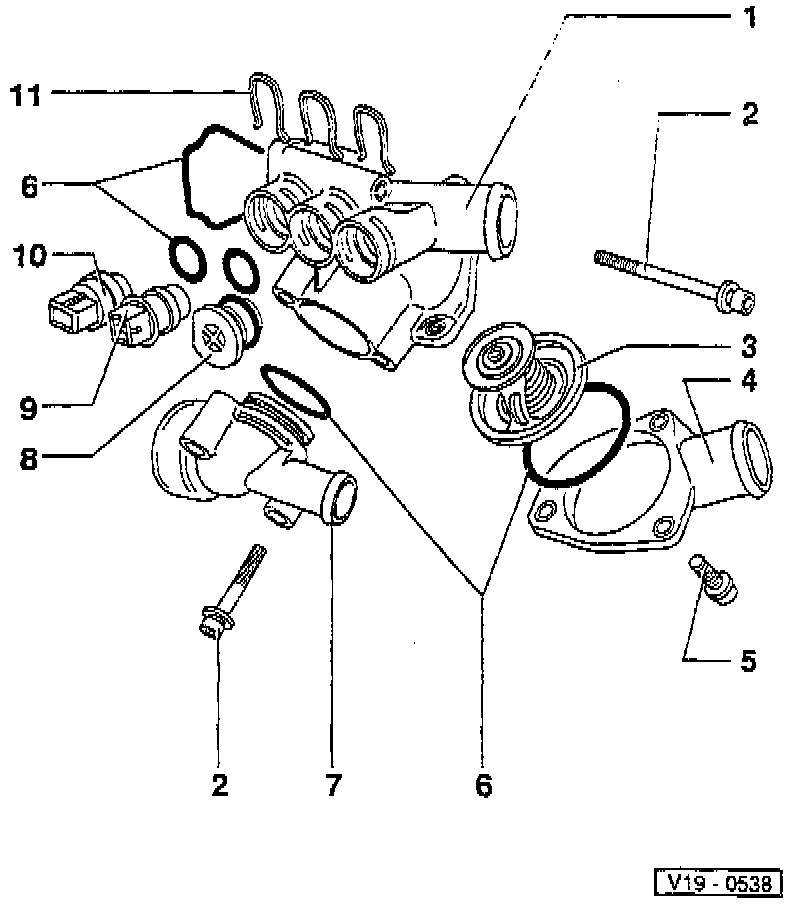

Thermostat: Service and Repair

Note: For information on coolant hose routing and connections to the thermostat housing, please refer to Water Pump Diagrams. Diagrams
LEGEND
1 Thermostat Housing
2 Bolt
3 Thermostat
4 Connection
5 Bolt
6 O-ring
7 Connection
8 Plug
Or
8 A/C Cut-Out Thermal Switch And Third Speed Fan Control Thermal Switch
9 After-Run Coolant Fan Control Thermal Switch With Engine Coolant Temperature Sensor.
10 Engine Coolant Temperature Sensor
11 Retaining Clip
NOTE: During Testing and Inspection or Service and Repair procedures, refer to the component location illustration above and component notes below.
COMPONENT NOTES
Bolt (2)
- Tighten to: 10 Nm (7 ft. lbs.).
Thermostat (3)
- Checking, submerge thermostat in heated water and observe as follows:
- Opening begins at approx: 80°C (176°F).
- Opening ends at approx: 105°C (221°F).
- Opening stroke, minimum: 7 mm (0.2800 inches)
Bolt (5)
- Tighten to: 10 Nm (7 ft. lbs.).
O-ring (6)
- Always replace.
Plug (8)
- For models without A/C.
OR
A/C Cut-Out Thermal Switch And Third Speed Fan Control Thermal Switch (8)
- For models with A/C.
- Color: brown.
- Four pin connector.
After-Run Coolant Fan Control Thermal Switch With Engine Coolant Temperature Sensor (9)
- Color: yellow.
- Four pin connector.
- Switching Temperatures:
- On: 101-107°C (214-225°F).
- Off: 94-100°C (210-212°F).
Engine Coolant Temperature Sensor (10)
- Color: blue.
- For Motronic.
Retaining Clip (11)
- Ensure clip is seated securely.